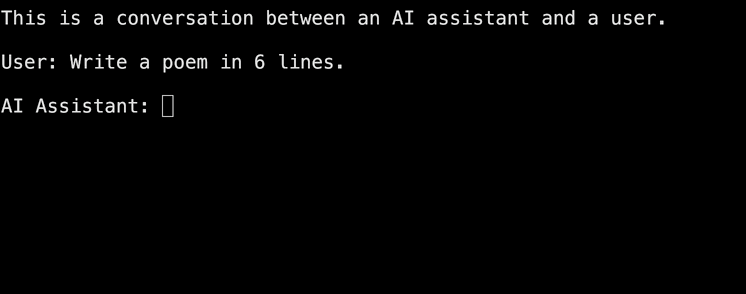
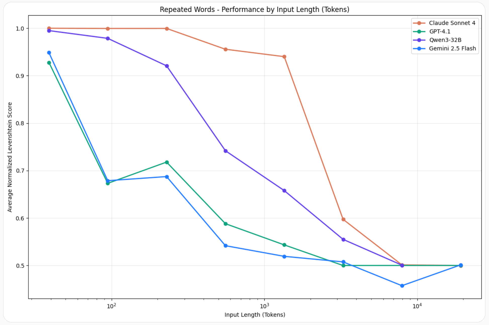
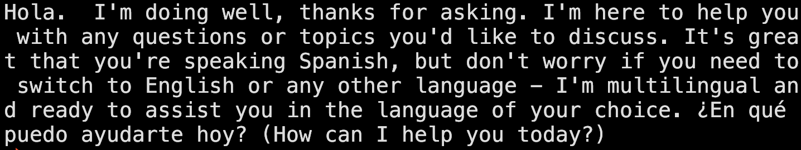

LLM Concepts
How do LLMs work?
At there core, LLMs are number predictors. You may have heard that they are next word predictors, fancy
autocompletes,
magic boxes, etc. Yes, they are, but at their core, they are number predictors.
Suppose you work at a weather API company, and you create a model that predicts tomorrow's temperature. That model
has
seen weather data for past many years, and based on the data, it looks at last week's temperatures, let's say they
are
33, 35, 32, 38, 36 and 32 degree celcius, and your model says that there's a 60% chance that tomorrow's temperature
is
34 degree, 20% chance that it's 39 degree, etc.
This is exactly how LLMs work too!
Let's say we have an enormous corpus of words made up of words: [of, the, Vikram, class, is, in, lazy, tallest,
home,
a]
The text looks something like this:
Vikram is the ...
Let's randomly assign words to those numbers
- 31: of
- 32: the
- 33: Vikram
- 34: class
- 35: is
- 36: in
- 37: lazy
- 38: tallest
- 39: home
- 40: a
And replace every word in the text corpus with its corresponding word
Now our text looks like 33 35 32...
All that we do now is treat these numbers as the "past year's temperature data" like we did in the weather API, and
create a model that predicts what's the tomorrow's temperature, a.k.a., the next number. Let's say we get the
response
from model that it's 60% chance that the next number is 34, 20% chance that it's 39, etc.
If you've been following carefully, it's saying the same thing as, "It's 60% chance that the next word is
class, 20% chance that the next number is home, etc"
What? It's that easy? Yes it is!
To recap clearly, here's what we do:
-
Write each word from text corpus as a number, that's our dataset
-
Create a model that when given a sequence of numbers, predicts what the next number will be(more precisely, the
probability of each number to be the next number) based on the numbers from the dataset
-
This is s crucial step:
Based on the probabilities it sees, it does not simply pick the number with the highest probability. It randomly
generates a number from the distribution based on it's probability. Here, it's 60% probability that the number
will
be 34, 20% probability that the number will be 39.
-
Convert the number back to the word and present that word as the output. Here, if the random number picked was 34,
it'll output class as the answer.
But don't LLMs write entire paragraphs when given a simple prompt?
Yes, they certainly do, but before we go to that, try to come up yourself with the idea of how do they do that,
based
on the single word predictor that we just built.
Without going too much into detail, here are two things that go into creating fully working LLMs from our next word
predictor:
-
Say the current sentence is "Today's weather". We run the model once, and append the output we got to the
sentence,
so our sentence becomes "Today's weather is". We then feed this newly generated sentence back into the model, so
the
sentence becomes "Today's weather is nice". Do that a lot more times, and you have your paragraph. LLMs literally
get a text sample, predict next word, attach it to the text sample, predict next word, and so on. That's why on
ChatGPT's website, you see one word come at a time.
This process is continued until we encounter an end symbol, which is our next point.
- There is a special word in our vocabulary now, called <|end|>. It has occurred a lot of times in our text
corpus,
and when our model predicts that the next word is <|end|>, it knows that it's time to stop now. That symbol
isn't
shown to the user, it's just for our code to know that it's time to end the word prediction loop. A
visualizaion
of it is shown below:


In code, it's implemented like this:
text = "Today's weather"
while(True):
next_word = predict_next_word(text)
if next_word != "<|end|>":
text += next_word
elif next_word == "<|end|>":
break
return text
-
Last thing before we wrap
But LLMs answer the questions I ask them, not predict the next word.
This is achieved by something called system prompt.
When you ask LLM, "Write a poem in 10 lines", what's passed to the Next Word Predicting Loop is something
like following:
This is a conversation between an AI assistant and a user.
User: Write a poem in 10 lines
AI Assistant:
And if you can guess, the autocomplete loop will write a poem as a response to this. Here's a visualization for
it:


What are tokens?
Now you know that LLMs are next number predictors under the hood, where the numbers
represent words. Well, not exactly words. The most common text sequences are called tokens. These may
be words/subwords/symbols/even whitespaces.
These most common text sequences, hereafter referred as tokens are used to create a one-to-one mapping with numbers used
in the next number predictor.
- a - 1
- an - 2
- the - 3
- . - 4
- ...
For example, the text:
"A quick brown fox jumped over a lazy dog" is well-known sentence.
is tokenized as:

Few important points to note about tokens:
- If you send a request to an LLM, the text in your request is tokenized(conerted to numbers), these are called
input tokens. The tokens that the LLM generates(one at a time) are called output tokens.
- The whole LLM economics rely on input and output tokens. The pricing of models is measured in $/1 Million tokens.
For subscriptions, your ability to use models is limited by a fixed number of input/ouput tokens.
- Tokenizing input tokens takes compute and so does producing output tokens. It takes a lot of compute to predict
the next output token, and hence, it's much more expensive(often 2-5x) to predict output tokens.
Context Windows
You know that LLMs predict the next token based on previous tokens. The number of previous tokens that you can pass in a
single request is limited, and is called the context length of the model. It's measured in tokens.
Higher the context-length of the model, you can provide it more context about your query.
Technically, context lenght is not exactly the number of tokens you can pass to LLMs like Gemini, Claude or ChatGPT.
As we saw earlier, the next token generator is given a base conversation(like 'This is a conversation between an AI
assistant and a human'). Further, in models that support reasoning(further discussed), reasoning notes take up tokens.
So do system prompt and message history.
You can check LLM's context lenght in their documentation. Some Gemini models are famous for having context length of
excess of 1M tokens. While running locally, having higher context length takes up lot of space in memory.
Needle in a Haystack Problem
Just because context models for some models is very large doesn't mean you should pass enormous context to the model.
It's important to send the model only relevant context for higher accuracy. Below is a a graph of model performance vs
context length conducted in a study:

This problem is called as Needle in a Haystack Problem.
Using LLMs: Using APIs and Local LLMs
In this section, we will go over 3 of the biggest model providers and will also cover how to run LLMs locally. Also
we'll cover Groq, an LLM API provider.
Running LLM locally
Note that to run LLMs locally, it's recommended to have a dedicated GPU on your machine, preferable one with
Nvidia(for cuda). If you don't have a good GPU on your computer, feel free to just read through the section without
running model locally
To run LLM locally, first create a new virtual environment. In your virtual environment, install the transformers
library, and the pytorch libraries. Then create a python file and add the code:
from transformers import pipeline
pipe = pipeline("text-generation", model="Qwen/Qwen2.5-0.5B-Instruct")
messages = [
{"role": "user", "content": "Hi"},
]
result = pipe(messages)
print(result)
This code fetches the model Qwen 2.5-0.5B-Instruct from huggingface and runs it locally. Note that to use any model from huggingface locally, open it's model page in huggingface and click on Use this model and follow further instructions provided on huggingface. Also remember to look properly at error responses if you just copy paste code from huggingface, sometimes additional libraries are needed to be installed.
The output of the above code is:

Using APIs for LLM
Now let's look at how do we use LLMs by model providers using their API. We'll go over in detail in next few sections, but let's make an LLM request now.
We'll use groq because you get free inference easily on groq.
To call the LLM API, we'll follow the below steps:
- Create an account at dashboard.groq.com.
- Create an API key at groq dashboard. Do not share this API key with anyone, keep it secret.
- Save the API key in environment variables as GROQ_API_KEY. (look it up if you don't know how)
- Create a virtual environment and add openai library in the virtual environment
- Use following code to use LLM:
from groq import Groq
client = Groq()
chat_completion = client.chat.completions.create(
messages=[
{
"role": "user",
"content": "Hola, mi amigo! Como estas?",
}
],
model="llama-3.3-70b-versatile",
)
print(chat_completion.choices[0].message.content)
- Run the code!
That's it! You've successfully made an API call to an LLM. Do read the notes, they have few important points.
The output that we get in the terminal is as below

Notes
- You may come across the terms model parameters, or model weights. Both of them mean the same thing. In general, a model with higher number of parameters holds more information about the world that the one with lower number of parameters, or sometimes called lower weight model.
- In hugggingface, you'll see file extensions for models as sometimes .safetensors, .gguf, .onnx, etc. Each file format needs different pipeline under the hood to run it. It's recommended that you first look a the code provided in "User this model" to run it localy.
- You'll come across a term called multimodel models. These are models that can take multiple forms of inputs. Such as text, images, auido, documents, etc. Most LLMs that we'll use in server API calls are multimodel. In local case, you'll need to see if a model is multimodal and if it fits your use case.
-
- You may come across a term called edge AI. It means to run ML models locally, not on existing remote infrastructure. It may be on your phone/laptop, or smaller devices like smartwatches, earbuds, microcontrollers, etc. The opposite of edge AI is cloud AI or remote AI. In case of LLMs, you can run LLMs that can speak good English on normal laptops or even smartphones locally, and use clever tricks to make them effective(further discussed). But for world knowledge, it's impractical to run LLMs locally.
-